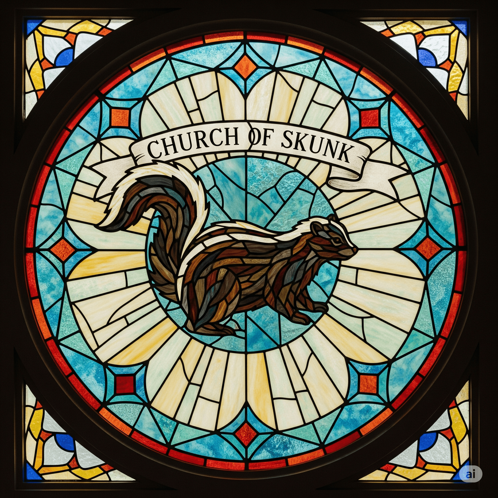

Church of Skunk is a cult that started in 2024. Cult members primarily worship Skunk but there are other gods in the pantheon too.


Church of Skunk is a cult that started in 2024. Cult members primarily worship Skunk but there are other gods in the pantheon too.
Skunk is a divine, all-powerful being who decides the fate of all life, the universe, and everything. If you don't think that's worthy of worship, you should probably lower your standards.
Read about Skunk
People who become members of Church of Skunk practice their faith by praying to skunk, saying "Praise be" to skunk when good things happen, and wishing good fortune on others by saying "Skunk bless".
Become a member
Devout Mephitists (derived from Mephitis mephitis, the scientific name for striped skunks) worship skunk by wearing skunk apparel, setting up altars, and making sacrifices. Read more about how to worship on our Practices page.
Learn about Practices
Church of Skunk is a place of love and acceptance. All who do not commit atrocities are welcome. You can become a member by filling out the membership form.
Become a member
Skunk isn't jealous like that, you can believe whatever you want to believe and still appreciate the holiness of skunk. In fact, Church of Skunk recognizes a pantheon of other deities in addition to Skunk, and encourages its members to worship whatever gods serve them best.
Church of skunk currently recognizes Badb & Macha of the Morrigan and Hazelnut as the next most powerful deities behind skunk - but there are many others in the pantheon, and more gods can be added by filling out the deity submission form. Visit our Deities Page to learn more.
Take me to the Deities Page!
Church of Skunk was inspired by the Skunk Second series on youtube. The series displays many beautiful forms of skunk, which inspired the cults creators to begin worshipping skunk and spreading the word of skunk to others. Read more about our beginnings on our Origin Story page.
Watch Skunk Seconds
Origin Story
Nope! But if you want to donate some money or help with fundraising that would be great. Funds are used to provide members with stickers, hats, altars, and more.
Contact us to donate
Skunk/skunk